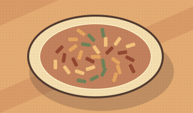
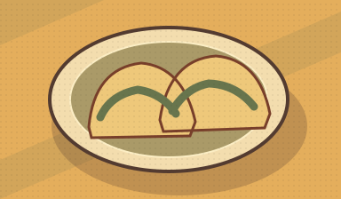
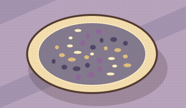
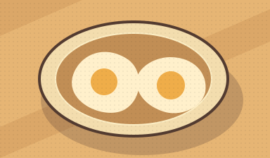
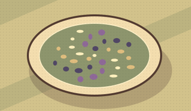
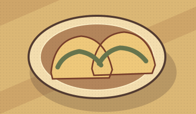
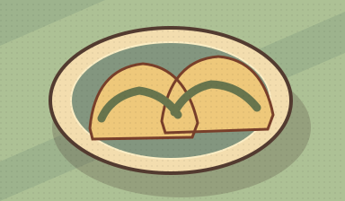
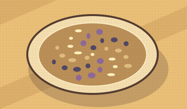
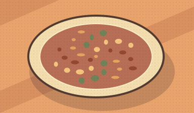
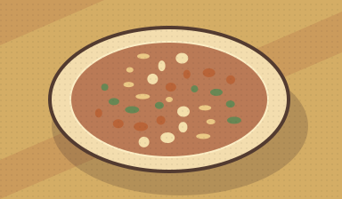

Dinner
Turkey & black bean chili
30 min · 3 servings
The whole kitchen kit, from breakfast to midnight popcorn.
30 min · 3 servings

55 min · 2 servings

25 min · 2 servings

25 min · 1 serving

20 min · 1 serving

25 min · 2 servings

20 min · 1 serving

10 min · 1 serving

10 min · 1 serving

5 min · 1 serving

5 min · 1 serving

5 min · 1 serving

10 min · 2 servings

5 min · 1 serving

5 min · 1 serving